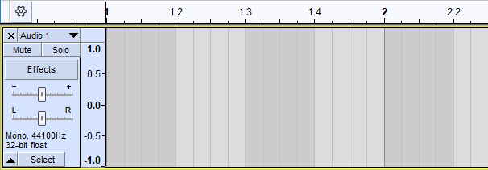
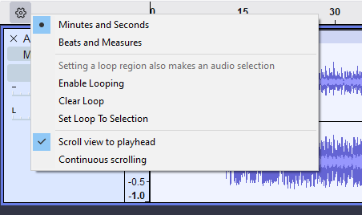

Timeline
| The Timeline is not merely an indicator of audio position but can also be used to effect Quick-Play. |
Contents
- The Timeline ruler
- The Timeline in use
- Enable pinned play head
- Using Timeline Quick-Play
- Clicking on the Timeline
- Timeline right-click menu
The Timeline ruler
Default time format
By default the basic Timeline ruler is displayed in Minutes and Seconds:
Scrub Ruler
Optionally the Scrub Ruler, the gray strip below the Timeline, can be shown too:
The Scrub Ruler is used solely for Scrubbing and Seeking and can be turned on in Interface Preferences and selecting  Show Scrub Ruler in the Timeline section.
Show Scrub Ruler in the Timeline section.
Beats and Measures
The Timeline scale can be optionally changed to Beats and Measures, Music View, format. To use this right-click in the Timeline to access its Context Menu.Alternatively you can use to change the Timeline format.
When you use Beats and Measures and add a new track to record into, or just start recording, then the track background will add musical gridlines to aid your recording.
- 
If you change to a Beats and Measures Timeline you should also enable the Time Signature toolbar from so that you can vary the time signature, if required.
|
See the Audacity support site for more details on using Beats and Measures, Music View.
The Timeline in use
- Standard playback shows:

- The playback start position cursor (the black vertical bar)
- The playback cursor (the green triangle) - playback will continue until stopped.
- Recording with no selection present shows:

- The playback (and recording) start position cursor (as above)
- The recording cursor (the red triangle) - recording will continue until stopped.
- After clicking and dragging in the timeline:

- A looping region is created. Pressing Play will now loop this section over and over.
- You can drag the in point, out point, as well as the entire looping region to different points in the timeline.
Continuous scrolling - pinned play head
You can change Audacity to play and record with a fixed head pinned to a position in the Timeline. In this mode the head remains static and the waveforms will move as the audio is played or recorded.
This behavior is controlled by using the button at the left of the Timeline. By default this shows as a gear-wheel.
Clicking on the gear-wheel will cause a context menu to be popped up.
- 
From that context menu you can check on Continuous scrolling. This will cause the play head or record head to be pinned to the center of the Timeline when playing or recording takes place and the waveform will move continuously under the fixed head.
Unpinned or pinned head can also be selected in .
| The default pinned position is the center of the Timeline, but you can change this by clicking on the pinned head and dragging it along the Timeline while you are playing or recording. A double-click on the head will restore it to its default position in the center of the Timeline. You may find that centered is the most useful when using playback but for recording, repositioning the head to the right may be useful. |
Using Timeline Quick-Play
Timeline Quick-Play provides a quick and convenient means to either start playback from any point within the current project. Simply click into the timeline to play from that point.
| Timeline Quick-Play is disabled during recording for safety reasons so that recording is not inadvertently interrupted. |
Clicking on the Timeline
- Left-Click: Timeline Quick-Play, play from the time position of the mouse pointer when clicked.
- Shift + Left-Click
- When playback looping is enabled, this plays the looping region only once.
- Right-Click: Opens the Timeline Right-Click menu.
- Left-click + drag creates a new looping region, or moves the current looping region around.
Right-click on the Timeline gives a short context menu.
- Minutes and Seconds: Sets the Timeline markings to be in minutes and seconds (default setting).
- Beats and Measures: Sets the Timeline markings to be in beats and measures.
- Setting a loop region also makes an audio selection: When disabled (default), left-click and dragging the looping region adjusts the looping region only, leaving the current selection or editing cursor unaffected.
- When enabled, left-click and dragging the looping region adjusts both the looping region and the waveform selection together. This is particularly useful when finding the right place for a seamless loop.
- Enable looping: Toggles looping on and off.
- Clear Loop: Clears any looping region
- Set Loop to Selection: Sets the looping playback region to the current selection.
- Scroll view to playhead: By default the waveform scrolls when playing. Disabling this option so as not to scroll can be useful when using Quick-Play to adjust the start and end of loops. Not scrolling ensures that the edges of the looped selection do not move if zooming in moves the playback point outside the visible area.
- The alternative method of disabling scrolling is to use Tracks Preferences and remove the checkmark from Auto-scroll if head unpinned.
- Continuous scrolling: You can change Audacity to play and record with a fixed head pinned to a position in the Timeline. In this mode the head remains static and the waveforms will move as the audio is played or recorded. The default setting is "off"